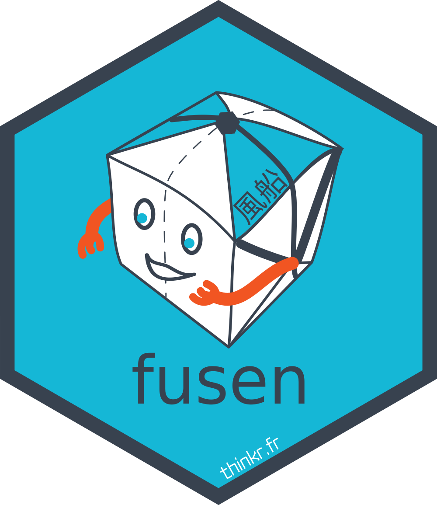

Draw a tree of your package files and functions
Source:vignettes/draw-a-tree-of-your-package-files-and-functions.Rmd
draw-a-tree-of-your-package-files-and-functions.RmdGet a tree of the package structure to help developers
get_package_structure() is a function that helps
developers understand the package structure. It reads the
dev/config_fusen.yaml file, adds the list of resulting
functions and extra description of files.
You can know:
- The description of the flat file as issued from its Title when exists
- If the flat file is still active
- The list of R files issued from the flat file
- The list of functions inside these R files
- The list of files of tests issued from the flat file
- There is a possibility to list all functions that are called in the test files
- The vignette issued from the flat file
With draw_package_structure(), you can draw a tree of
the package structure in the console.
This also works for any R package, not only for fusen built
packages.
#' \dontrun{
#' # This only works inside a 'fusen' built package
#' pkg_structure <- get_package_structure()
#' draw_package_structure(pkg_structure)
#' }
#'
#' # Example with a dummy package
dummypackage <- tempfile("drawpkg.structure")
dir.create(dummypackage)
# {fusen} steps
fill_description(pkg = dummypackage, fields = list(Title = "Dummy Package"))
dev_file <- suppressMessages(
add_flat_template(pkg = dummypackage, overwrite = TRUE, open = FALSE)
)
flat_file <- dev_file[grepl("flat_", dev_file)]
usethis::with_project(dummypackage, {
# Add an extra R file with internal function
# to list in "keep"
dir.create("R")
cat("extra_fun <- function() {1}\n", file = "R/my_extra_fun.R")
# Works with classical package
pkg_structure <- get_package_structure()
draw_package_structure(pkg_structure)
})
#> ✔ Setting active project to
#> '/tmp/RtmpNXVLU9/drawpkg.structure19e13e847478'
#> ── No NAMESPACE file found there: /tmp/RtmpNXVLU9/drawpkg.structure19e13e847478
#> ── keep ────────────────────────────────────────────────────────────────────────
#>
#> - keep
#> - path
#> + keep
#> - state
#> + 🍏 active
#> - R
#> - R/my_extra_fun.R
#> + 🙈 extra_fun
#> - tests
#> - vignettes
#> ✔ Setting active project to '<no active project>'
usethis::with_project(dummypackage, {
# Works with 'fusen' package
suppressMessages(
inflate(
pkg = dummypackage, flat_file = flat_file,
vignette_name = "Get started", check = FALSE,
open_vignette = FALSE
)
)
pkg_structure <- get_package_structure()
draw_package_structure(pkg_structure)
})
#> ✔ Setting active project to
#> '/tmp/RtmpNXVLU9/drawpkg.structure19e13e847478'
#> ── config file for dev/flat_full.Rmd ───────────────────────────────────────────
#> ── Reading NAMESPACE file ──────────────────────────────────────────────────────
#> ── flat_full.Rmd ───────────────────────────────────────────────────────────────
#> ── keep ────────────────────────────────────────────────────────────────────────
#>
#> - flat_full.Rmd
#> - flat_title
#> + flat_full.Rmd for working package
#> - path
#> + dev/flat_full.Rmd
#> - state
#> + 🍏 active
#> - R
#> - R/my_median.R
#> + 👀 my_median
#> - R/my_other_median.R
#> + 👀 my_other_median
#> + 🙈 sub_median
#> - tests
#> + tests/testthat/test-my_median.R
#> + tests/testthat/test-my_other_median.R
#> - vignettes
#> + vignettes/get-started.Rmd
#> - keep
#> - path
#> + keep
#> - state
#> + 🍏 active
#> - R
#> - R/my_extra_fun.R
#> + 🙈 extra_fun
#> - tests
#> - vignettes
#> ✔ Setting active project to '<no active project>'Get the list of functions from a R file
file_path <- tempfile(fileext = ".R")
cat(
"my_fun <- function() {1}",
"my_fun2 <- function() {2}",
sep = "\n",
file = file_path
)
get_all_created_funs(file_path)
#> [1] "my_fun" "my_fun2"